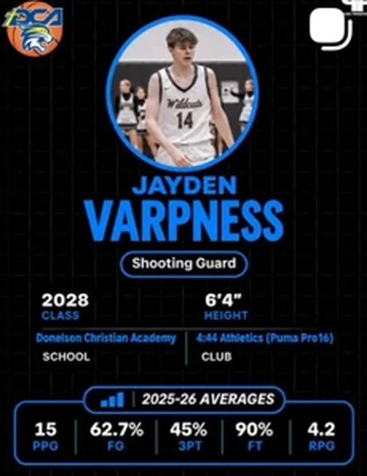
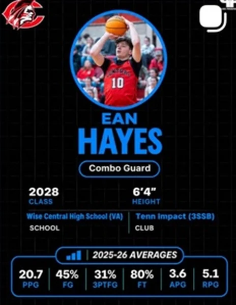
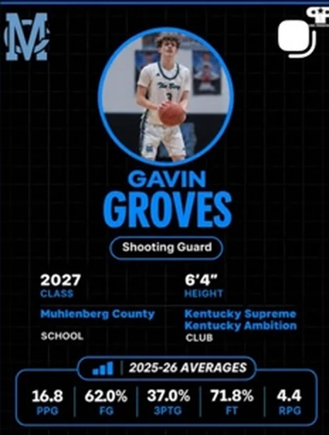
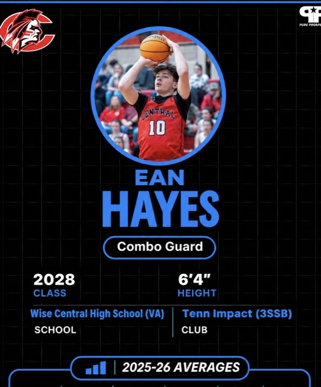
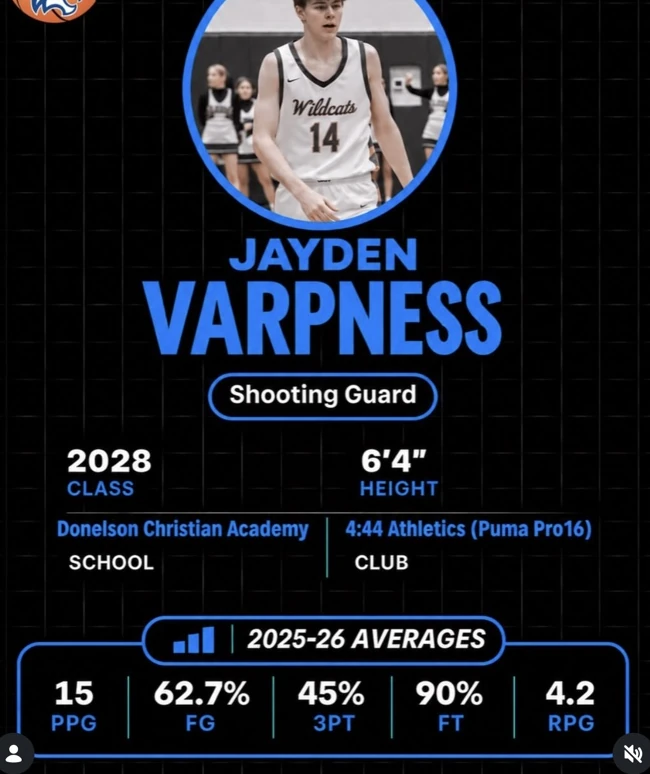
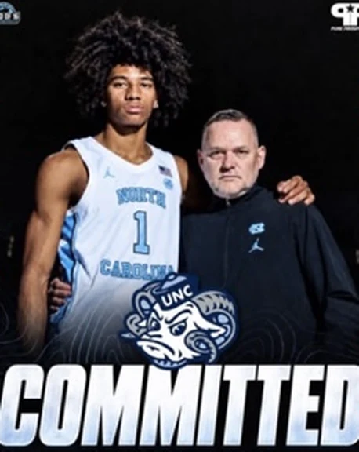
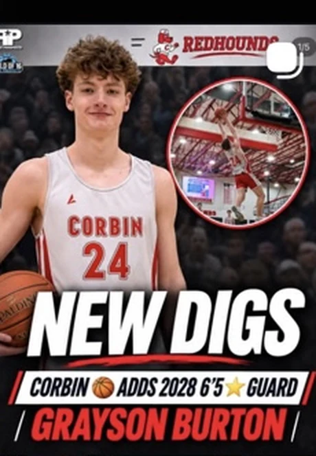
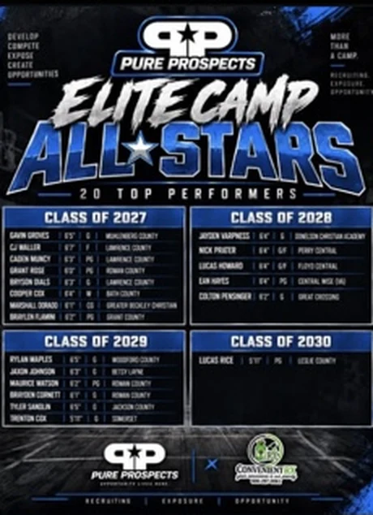
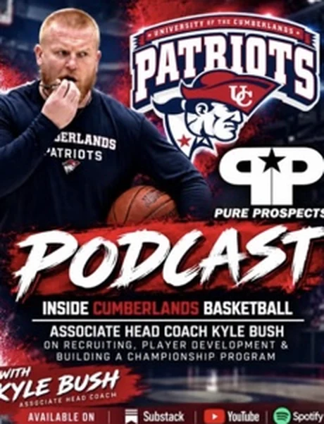

PP / 001
THE HOME OF THE NEXT GENERATION 01 / PURE PROSPECTS
THE NEXT
WAVE STARTS
HERE.
The stories, the standouts, the names you need to know. Bringing emerging talent into focus through real scouting, real coverage, and real opportunity.



BEHIND THE HIGHLIGHTS.
ON OUR RADAR ✦


SCOUTING REPORT2028CLASS WATCHLIST ● LIVE
SCROLL TO EXPLORE
BUILT ON REAL CONNECTIONSMORE THAN
MORE THAN
JUST HIGHLIGHTS.
1,500+
Coaches in the
promoted network
5M+
Platform views
reported by the brand
KY→USA
Kentucky roots.
Broader recruiting coverage
*Reach and network figures are from Pure Prospects’ supplied promotional materials. Verify all figures and geographic claims before publishing a live site.
01 / THE WATCHLIST
TALENT WORTH
WATCHING.
They're putting in the work. We're putting eyes on it. Meet some of the names making noise.
✳
JAYDEN
PP / 002
EAN
HAYES
PP / 003
GAVIN
GROVES
01—03 / FEATURED ATHLETESSEE MORE PROSPECT SPOTLIGHTS ↗
02 / OUR MISSION
✳AN EYE FOR TALENT.
A PLATFORM FOR POSSIBILITY.
EVERY PLAYER
HAS A STORY.
WE MAKE SURE
IT GETS SEEN.
Greatness starts long before the spotlight. From the first evaluation to the next major opportunity, Pure Prospects puts the work, the growth, and the potential of emerging athletes front and center.
↗03 / WHAT WE DO
MORE THAN A
NAME ON A LIST.
Built to give athletes exposure and the people following them a clearer picture of what comes next.
PLAYER PROFILES
& EVALUATIONS
Individual prospect breakdowns with athlete information, performance highlights, and shareable coverage.
REQUEST AN EVALUATION ↗RECRUITING
ASSISTANCE
Insight, exposure, and a clearer path for families navigating the recruiting process.
LET'S TALK RECRUITING ↗SCOUTING,
RANKINGS & INTEL
On-the-ground coverage of emerging talent, recruiting movement, rankings and news that matters.
READ THE LATEST ↗04 / THE WIRE
ALL SIGNAL.
NO NOISE.
Prospects, commitments, the headlines and the moments moving the game forward.

RECRUITING / COMMITMENTSTHE NEXT CHAPTER:
DEMARCUS HENRY
COMMITS TO UNC.
THE WIRE · BASKETBALL↗

PLAYER MOVEMENTNEW DIGS.
NEW OPPORTUNITY.
RECRUITING UPDATE↗

ON THE CIRCUITELITE CAMP.
REAL STANDOUTS.
CAMP COVERAGE↗
THE STORY DOESN'T STOP HERE.REPORTING FROM THE COURT TO YOUR FEED.
READ THE REPORT ↗
PP ↗
BEYOND
THE GAME™
THE GAME™
05 / THE CONVERSATION
ON AIR
MORE THAN
JUST THE
BOX SCORE.
Real conversations with the people shaping the game. Coaches, athletes, recruiting perspectives, and stories you won't find on a stat sheet.
06 / GOOD TO KNOW
GOT
QUESTIONS?
Here's where to start. Reach out for anything specific to your athlete or program.
WHAT IS A PLAYER PROFILE & EVALUATION? +
A shareable write-up and player overview based on information, film or scouting supplied for review. Contact Pure Prospects to discuss the current process, turnaround time, and what's included.
IS PURE PROSPECTS ONLY FOR BASKETBALL? +
Basketball scouting and recruiting are central to the platform, and its recent coverage also includes football news and athlete stories. Ask about coverage for your sport.
HOW DO WE GET OUR ATHLETE FEATURED? +
Use the contact form below or email Pure Prospects with the athlete's name, graduation class, school, position, contact details, and relevant links. Features are subject to the team's review.
CAN COLLEGE COACHES CONNECT WITH THE PLATFORM? +
Yes, coaches and scouts can reach out using the contact information below to discuss player coverage, evaluations, and potential connections.
07 / LET'S CONNECT
YOUR NEXT
CHAPTER
STARTS HERE.
Have an athlete we should know about? Want to discuss evaluations, recruiting help, or media coverage? Start the conversation.
REACH US DIRECTLYPPKYSCOUTS@GMAIL.COM ↗